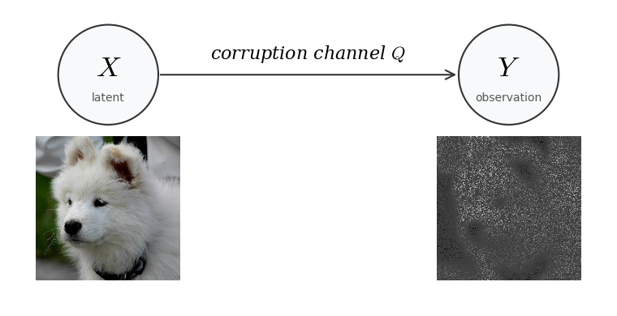
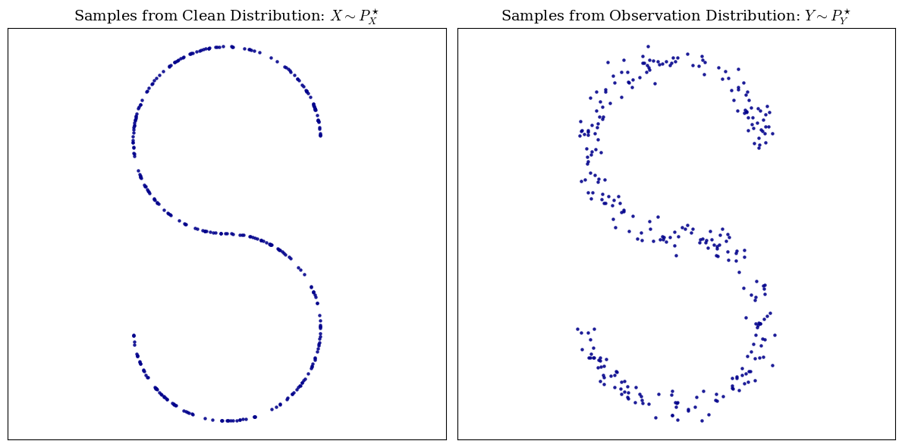
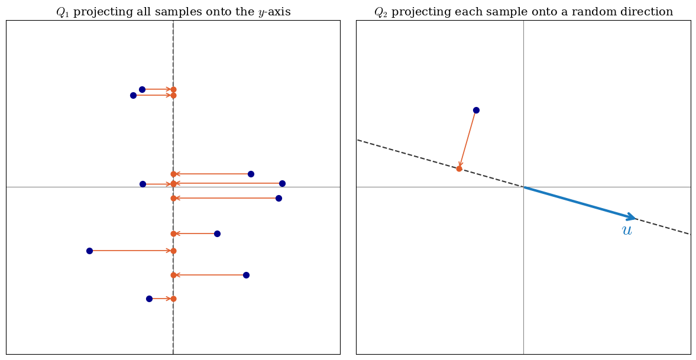
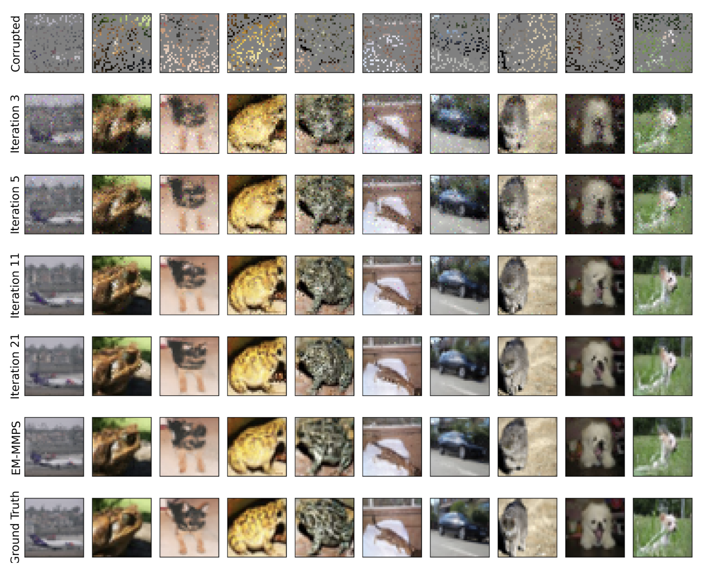
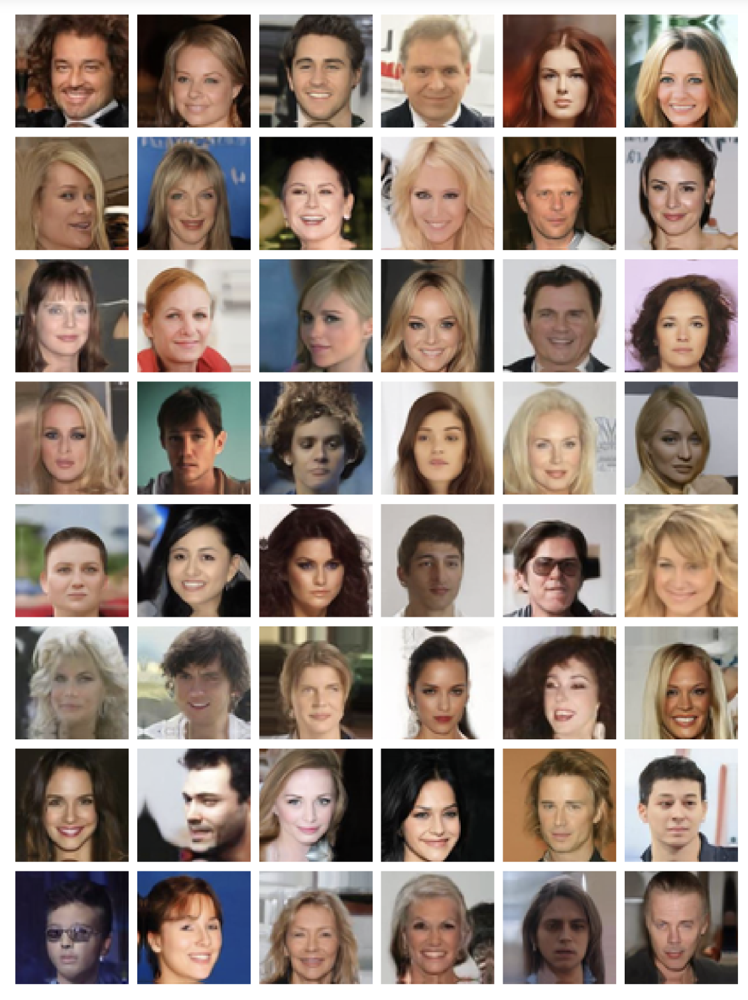

This post is a companion to our paper DiffEM: Learning from Corrupted Data with Diffusion Models via Expectation Maximization, joint work with Fan Chen, Giannis Daras, Antonio Torralba, and Constantinos Daskalakis.
Introduction
Diffusion [4, 9] and score-based models [3] have shown impressive results in generative modeling. For a good portion of the past decade GANs [10] were the most popular models for generating images, however training GANs is usually hard because of stability issues. Diffusion models outperformed GANs [11] and replaced them in the past few years.
Diffusion models are remarkably capable of capturing highly complex distributions, but this expressive power comes at a cost: they are prone to overfitting, making data quality all the more critical. Also, it requires large datasets of high-quality samples, a luxury that is often far from reality. In practice, most available data is noisy, low-quality, or otherwise corrupted.
This will give rise to a natural question: Is it possible to train a generative model on a dataset consisting of these corrupted samples and still learn the underlying distribution of the clean data?
The answer is yes.
In this post, we will introduce a method called DiffEM (a mix of Diff for Diffusion and EM for Expectation-Maximization) [5], which trains a diffusion model in an iterative loop, progressively improving dataset quality and updating the model in tandem. As we will see, this turns out to be an instance of the Expectation Maximization (EM) algorithm, a well-known and thoroughly studied framework for inference problems.
Several prior works have explored learning from corrupted data in related settings [6, 7, 8].
Setup and Notation
Let's first make the setup precise. Assume you are given a dataset $D_Y = \{y_1, y_2, \ldots, y_N\}$ that comes from the data distribution $P_Y^\star$. We also call these datapoints $y_i$ observations. Unfortunately the dataset is corrupted. What this means is that under the hood there is some corruption process going on. You can think of the process being like the following: a clean sample $X$ is taken from the “clean” distribution $P_X^\star$ and it goes through some deterministic/non-deterministic corruption process which creates a sample $Y$. The figure below illustrates this process:

So conditioned on knowing the clean sample $X$, there is some conditional distribution on $Y$. This conditional distribution is called the corruption channel, we will denote it by $Q(\cdot|X)$.
Using the bayes' rule you can compute the distribution of $Y$, $P_Y^\star$, using $Q$ and $P_X^\star$: $$P_Y^\star(y) = \int_{\mathcal{X}} P_X^\star(x) \, Q(y|x) \, dx$$ where $\mathcal{X}$ is the space that $X$ lives in. There is also a more compact way to write the same equation so that we could avoid writing integrals each time: $$ P_Y^\star = Q \# P_X^\star $$ Which is read “the pushforward of $P_X^\star$ through the channel $Q$”. This is a common notation in information theory and optimal transport.
We will not assume that $X$ and $Y$ live in the same space, for example $X$ could be an image living in $\mathbb{R}^{3 \times 512 \times 512}$ and y could be a real vector in $\mathbb{R}^{10}$. We will denote the space that $Y$ lives in with $\mathcal{Y}$.
Some Examples
Here are some examples of different corruption channels.
Gaussian Noise Channel: $Q(\cdot|X) = \mathcal{N}(X, \sigma^2 I)$
Random Masking Channel: $Y \sim Q(\cdot|X) \iff Y = A \odot X \quad \text{where } A_{ij} \sim \text{Ber}(0.5)$
JPEG Compression Algorithm: $Q(\cdot|X) = \text{JPEG}(X)$
Gaussian Blur Channel: $Q(\cdot|X) = K_\sigma \ast X \quad \text{where } K_\sigma \text{ is a Gaussian kernel}$

One sample from AFHQ [9] and different corrupted versions of it.
Preliminaries
Here we will mostly focus on Expectation Maximization. Even though our method uses diffusion models (any generative model would work for the algorithm) we won't discuss preliminaries of them in here (you should take a look at this blog post if you are interested in learning more about diffusion models).
As we had earlier, there are two random variables $X\sim P_X^\star$ and $Y\sim P_Y^\star$, $X$ is the unknown latent variable, and $Y$ is the observation, the data that we have. We will denote the learned distribution with $q_\theta$, so we will use $q_\theta(x, y)$ for the joint PDF function, along with $q_\theta(x)$ and $q_\theta(y)$ for the learned marginals. We further assume that the conditional distribution of $Y$ given $X$ is known, we will denote that with $Q(\cdot | X)$. We are seeking a $\theta$ that will maximize the likelihood:
$$\begin{aligned} &\max_\theta \mathcal{L}(\theta) \\ &\text{where } \mathcal{L}(\theta) = \textcolor[RGB]{33,118,255}{\mathbb{E}_{Y \sim P_Y^\star} \log q_\theta(y)} \end{aligned} \tag{1}$$Which is equivalent to minimizing the KL divergence between $P_Y^\star$ and $q_\theta$:
$$D_{\mathrm{KL}}(P_Y^\star \| q_\theta(y)) = \underbrace{\textcolor[RGB]{33,118,255}{-\mathbb{E}_{Y \sim P_Y^\star} \log q_\theta(Y)}}_{\text{function of } \theta} + \underbrace{\textcolor{red}{\mathbb{E}_{Y \sim P_Y^\star} \log P_Y^\star(Y)}}_{\text{constant w.r.t.}\ \theta} \tag{2}$$Since the blue terms in equations (1) and (2) are equivalent up to a sign, and the red term is a constant with respect to $\theta$, minimizing the KL in equation (2) reduces to optimizing its first term alone, which is exactly the maximization in equation (1).
It's not really feasible to directly optimize this, but there are ways to go around it. Let's try to maximize some lower bound on $\mathcal{L}(\theta)$ instead of trying to maximize it directly. We could use the following ELBO bound for all the distributions $q_\phi$:
$$\mathcal{L}(\theta) = \mathbb{E}_{Y \sim P_Y^\star} \log q_\theta(y) \ge \mathbb{E}_{Y \sim P_Y^\star} \mathbb{E}_{X \sim q_\phi(\cdot|Y)} \log \frac{q_\theta(X, Y)}{q_\phi(X|Y)}$$Optimizing on the lower bound yields:
$$\max_\theta \mathcal{L}(\theta) \ge \max_\theta \mathbb{E}_{Y \sim P_Y^\star} \mathbb{E}_{X \sim q_\phi(\cdot|Y)} \log \frac{q_\theta(X, Y)}{q_\phi(X|Y)}$$And again you can break down the term on the right hand side (just like we did right before this with the KL divergence in equation (2)):
$$\begin{aligned} &\mathbb{E}_{Y \sim P_Y^\star} \mathbb{E}_{X \sim q_\phi(\cdot|Y)} \log \frac{q_\theta(X, Y)}{q_\phi(X|Y)} \\ &\quad= \underbrace{\textcolor[RGB]{33,118,255}{\mathbb{E}_{Y \sim P_Y^\star} \mathbb{E}_{X \sim q_\phi(\cdot|Y)} \log q_\theta(X, Y)}}_{\text{function of } \theta} - \underbrace{\textcolor{red}{\mathbb{E}_{Y \sim P_Y^\star} \mathbb{E}_{X \sim q_\phi(\cdot|Y)} \log q_\phi(X|Y)}}_{\text{constant w.r.t.}\ \theta} \end{aligned}$$Since the red term does not depend on $\theta$, maximizing the ELBO over $\theta$ reduces to maximizing the blue term alone. We have said that $q_\phi$ could be any distribution and if you pay close attention to the first term, one of the expectations is taken over $q_\phi$, so it better be something that we already have learned and we can sample from. This is the first spark of why we are going to use an Expectation Maximization Algorithm!
In particular, the EM algorithm can be succinctly written as: Starting from an initial point $\theta^{(0)}$, iterate
$$\theta^{(k+1)} = \arg\max_\theta \, \mathbb{E}_{Y \sim P_Y^\star} \mathbb{E}_{X \sim q_{\theta^{(k)}}(\cdot|Y)} \log q_\theta(X, Y).$$In our setting, since the likelihood $\mathbf{Q}$ is known, we have $q_\theta(x, y) = \mathbf{Q}(Y = y | X = x)\, q_\theta(x)$. Thus substituting will yield:
$$\begin{aligned} \theta^{(k+1)} &= \arg\max_\theta \, \mathbb{E}_{Y \sim P_Y^\star} \mathbb{E}_{X \sim q_{\theta^{(k)}}(\cdot|Y)} \log q_\theta(X, Y) \\ &= \arg\max_\theta \, \mathbb{E}_{Y \sim P_Y^\star} \mathbb{E}_{X \sim q_{\theta^{(k)}}(\cdot|Y)} \left[ \underbrace{\log \mathbf{Q}(Y|X)}_{\text{constant w.r.t.}\ \theta} + \log q_\theta(X) \right] \\ &= \arg\max_\theta \, \mathbb{E}_{Y \sim P_Y^\star} \mathbb{E}_{X \sim q_{\theta^{(k)}}(\cdot|Y)} \log q_\theta(X). \end{aligned}$$It is easy to see that the optimization that we are doing in each step is equivalent to:
$$\theta^{(k+1)} = \arg\min_\theta \, D_{\mathrm{KL}}(\pi^{(k)}(x) \| q_\theta(x)), \tag{3}$$
where $\pi^{(k)}(x) = \mathbb{E}_{Y \sim P_Y^\star}[q_{\theta^{(k)}}(x|Y)]$ is a posterior mixture with respect to
the observation distribution. In here, the word mixture means that it is a convex combination of other distribution
densities, the coefficients here are $P_Y(y)$.
Several natural questions arise at this point, most importantly, whether this procedure is guaranteed to converge,
and if so, is the rate of convergence fast or slow? Are there any extra conditions on $Q$? Fortunately, we could
show in theory and verify in practice that the method will improve after each iteration and will converge, provided
$\mathbf{Q}$ is not a pathological channel (of course, if $\mathbf{Q}$ were to zero out all information, the problem
would be unsolvable regardless of method). For detailed convergence guarantees and proofs, we refer the reader to
the DiffEM paper [5].
In the following sections here we will talk about what it means for $Q$ to be a reasonable corruption channel, and we will
show that the distribution will improve after each iteration.
Fun fact: It could be proved that the iterative process in equation (3) is equivalent to a mirror descent in the space of distributions with the KL divergence as the Bregman divergence [1].
This iterative method is shown in the following algorithm:
The $L_{\text{SM}}$ loss is the typical score matching loss [3] for the model and is defined as follows:
$$L_{\text{SM},k}(\theta) = \mathbb{E}_{t,\, X \sim \mathcal{D}_X^{(k)},\, Y \sim \mathbf{Q}(\cdot|X)} \, \mathbb{E}_{Z \sim \mathcal{N}(0, I),\, X_t = X + \sigma_t Z} \left\| \mathbf{s}_\theta(X_t, t | Y) + Z \right\|^2$$After you finish training the conditional model, if you want to have an unconditional generative model you can generate a new clean dataset by conditioning it on the whole corrupted dataset and train a generative diffusion model.
Reasonable Corruption Channel
Identifiability
Not every corruption channel makes the problem tractable. Some channels can make recovery hard or outright impossible, for instance, a channel that maps everything to zero deterministically destroys all information about the clean data. In the DiffEM paper, we show that a mild identifiability condition on the channel is sufficient for convergence at an exponential rate. Here we give intuition for what identifiability means, without going through all the technical details.
In statistics, identifiability has a really close meaning to injectivity. It means that the channel should not map two different clean distributions to the same thing, for example, look at the image below, assume that you are given the observation distribution and you know that the corruption channel is a small random gaussian noise, then you can instantly say that the S-shaped distribution on the left is the the clean distribution. Well, in fact, you can show that if the corruption channel is a gaussian noise, then we do have identifiability, i.e. two different clean distributions have different noisy distribution.

Sometimes identifiability might be refferd to as being invertible, this is essentially the same, assume a clean distribution $P_X$ is mapped to some dirty distribution $P_Y$, the mapping is some function $f$. (which is doing the pushforward operation $f(P_X) = Q\# P_X$), then, identifiability means that $f$ is reversible:
$$f(P_X) = P_Y \Rightarrow f^{-1}(P_Y) = P_X$$Which means that it is reversible on distribution level, but not necessarily on sample level i.e. given a noisy sample you might not be able to recover the clean sample, but given the distribution of the noisy data, you can recover the distribution of the clean data.
Examples
Let's take a look at two examples. For each example there is two possibilities, either it is not identifiable which means that we should find some counter-example (find two distributions that are mapped to the same distribution under corruption) or it is identifiable and we should prove it.
Example 1 (Projection Channel): Consider the distribution $P_X$ on the 2D plane, and the corruption channel $Q_1$ that takes each sample from distribution $P_X$ on the 2D plane, and projects it on to the $y$ axis and returns the $y$, so $P_Y$ is a distribution on the real axis.
Example 2 (Random Projection Channel): Consider a distribution $P_X$ on the 2D plane, and the corruption channel $Q_2$ that takes each sample $x \in \mathbb{R}^2$ and picks a unit vector $u$ uniformly at random from the unit circle. It then returns the pair $Y = (\theta, u^\top X)$, where $\theta \in [0, 2\pi)$ is the angle of $u$ with the positive $x$-axis and $u^\top X$ is the dot product of $u$ with the sample, i.e. the signed length of the projection of $X$ onto $u$. So $P_Y$ is a distribution on the cylinder $[0, 2\pi) \times \mathbb{R}$.

Now let's analyze the examples.
Example 1: Let's consider two different distributions $P_1=\mathcal{N}(0, \sigma^2)$ and $P_2=\mathcal{N}(\mu, \sigma^2)$, Since we only shifted one distribution by $\mu$ and the corruption channel $Q_1$ is a projection on the $y$ axis, we have $Q_1\# P_1 = Q_1\# P_2$. Thus here we don't have identifiability. $\square$
Example 2: Suppose that $P_1$ and $P_2$ have the same pushforward distribution through $Q_2$, thus $Q\#P_1 = Q\#P_2=P_Y$. Each sample in $P_Y = Q\#P_i$ is of the form $$\begin{pmatrix} u^TX \\ \Theta \end{pmatrix}$$ By fixing the second coordinate, and looking at the conditional distribution, we have the distribution of $u^TX$ for any fixed $u$ with $||u||=1$. And this distribution will be the same for both $P_1$ and $P_2$, since we they have the same pushforward. Now let's take a look at the characteristic function of the distribution of $P_X$: $$\phi_{P_X}(t) = \mathbb{E}_{X \sim P_X} e^{i t^T X}$$ Now for any $t\in \mathbb{R}^2$, you could rewrite $t$ as $t=r u$, where $r=||t||$ and $u$ is a unit vector. Thus the characteristic function can be rewritten as: $$\phi_{P_X}(t) = \mathbb{E}_{X \sim P_X} e^{i r u^T X}$$ Now, since we have the distribution of $u^TX$ for any $u$, and it is the same for each of the two distributions, we have $\phi_{P_1}(t) = \phi_{P_2}(t)$ for all $t$, and thus $P_1=P_2$. Thus we have identifiability. $\square$
Monotonic Improvement
It is notable that the distribution that you learn in each iteration will be always some improvement over the previous iteration. This was verified in practice, by looking at the figures or the evaluations after each EM iteration. This is also proved in theory, in the paper we show: $$\underbrace{D_{\mathrm{KL}}(P_Y^\star \| P_Y^{(k+1)})}_{\text{error of prior } \pi^{(k+1)}} \leq \underbrace{D_{\mathrm{KL}}(P_Y^\star \| P_Y^{(k)})}_{\text{error of prior } \pi^{(k)}} - \underbrace{D_{\mathrm{KL}}(\pi^{(k+1)} \| \pi^{(k)})}_{\text{difference between priors}} + \underbrace{\varepsilon_{\mathrm{SM}}^{(k)}}_{\text{score-matching error of } q_{\theta^{(k+1)}}}$$ Where $\pi^{(k)}$ denotes the distribution on the prior in the $k$-th iteration, i.e. the distribution on $X$ in $k$-th iteration, which we know satisfies the pushforward equation $P_Y^{(k)} = Q\# \pi^{(k)}$.
The last term could be expanded as: $$\varepsilon_{\mathrm{SM}}^{(k)} = \mathbb{E}_{Y \sim P_Y^\star} D_{\mathrm{KL}}(q_{\theta^{(k+1)}}(\cdot|Y) \| P^{(k)}(\cdot|Y)).$$ We can see that $\varepsilon^{(k)}_{\mathrm{SM}}$ appears because of the error our diffusion model, this term only grows when the model is incapable of learning the distribution well.
Experimental Results
Let's look at one of the experiments from the paper. We took the CIFAR-10 dataset, corrupted it with random masking at a rate of $\rho = 0.75$, and provided only the corrupted observations to DiffEM, with no additional information. The algorithm was run for approximately $20$ EM iterations. The table below reports evaluation metrics for the final conditional model (trained within the EM loop) and the unconditional model obtained afterward.| Task | Method | IS ↑ | FID ↓ | FDDINOv2 ↓ | FD∞ ↓ |
|---|---|---|---|---|---|
| Posterior Sampling |
Ambient-Diffusion | $7.70$ | $30.76$ | $260.23$ | $256.11$ |
| EM-MMPS | $9.77$ | $6.49$ | $237.02$ | $231.80$ | |
| DiffEM (Ours) | $\mathbf{9.81}$ | $4.68$ | $220.97$ | $216.53$ | |
| DiffEM (Warm-started) | $9.66$ | $\mathbf{4.66}$ | $\mathbf{186.90}$ | $\mathbf{180.70}$ | |
| Unconditional Generation |
Ambient-Diffusion | $6.88$ | $28.88$ | $1068.00$ | $1062.98$ |
| EM-MMPS | $8.14$ | $13.18$ | $643.59$ | $640.14$ | |
| DiffEM (Ours) | $\mathbf{8.57}$ | $\mathbf{10.24}$ | $598.18$ | $594.75$ | |
| DiffEM (Warm-started) | $8.49$ | $10.33$ | $\mathbf{546.07}$ | $\mathbf{541.53}$ |
Table 1: Posterior sampling and unconditional generation performance on CIFAR-10 with random masking with corruption rate of $\rho = 0.75$ compared to Ambient-Diffusion and EM-MMPS. The details of DiffEM with warm-start are described in Section 4.1.1.
Visualization

Showing the improvement of samples after each iteration for the conditional diffusion model on CIFAR-10 [13] with random masking at corruption rate $\rho = 0.75$.

Unconditional samples from the experiment with CelebA dataset [2] with $\rho = 0.5$ corruption probability.
References
- Pierre-Cyril Aubin-Frankowski, Anna Korba, Flavien Léger (2022). Mirror Descent with Relative Smoothness in Measure Spaces, with application to Sinkhorn and EM.
- Ziwei Liu, Ping Luo, Xiaogang Wang, Xiaoou Tang (2015). Deep Learning Face Attributes in the Wild. Proceedings of International Conference on Computer Vision (ICCV).
- Yang Song and Stefano Ermon (2020). Generative Modeling by Estimating Gradients of the Data Distribution. arXiv:1907.05600.
- Jonathan Ho, Ajay Jain, and Pieter Abbeel (2020). Denoising Diffusion Probabilistic Models. arXiv:2006.11239.
- Danial Hosseintabar, Fan Chen, Giannis Daras, Antonio Torralba, and Constantinos Daskalakis (2025). DiffEM: Learning from Corrupted Data with Diffusion Models via Expectation Maximization. arXiv:2510.12691.
- Giannis Daras, Kulin Shah, Yuval Dagan, Aravind Gollakota, Alexandros G. Dimakis, and Adam Klivans (2023). Ambient Diffusion: Learning Clean Distributions from Corrupted Data. arXiv:2305.19256.
- François Rozet, Gérôme Andry, François Lanusse, and Gilles Louppe (2025). Learning Diffusion Priors from Observations by Expectation Maximization. arXiv:2405.13712.
- Weimin Bai, Yifei Wang, Wenzheng Chen, and He Sun (2024). An Expectation-Maximization Algorithm for Training Clean Diffusion Models from Corrupted Observations. arXiv:2407.01014.
- Prafulla Dhariwal and Alex Nichol (2021). Diffusion Models Beat GANs on Image Synthesis. arXiv:2105.05233.
- Ian J. Goodfellow, Jean Pouget-Abadie, Mehdi Mirza, Bing Xu, David Warde-Farley, Sherjil Ozair, Aaron Courville, and Yoshua Bengio (2014). Generative Adversarial Networks. arXiv:1406.2661.
- Jascha Sohl-Dickstein, Eric A. Weiss, Niru Maheswaranathan, and Surya Ganguli (2015). Deep Unsupervised Learning using Nonequilibrium Thermodynamics. arXiv:1503.03585.
- Yunjey Choi, Youngjung Uh, Jaejun Yoo, and Jung-Woo Ha (2020). StarGAN v2: Diverse Image Synthesis for Multiple Domains. Proceedings of the IEEE/CVF Conference on Computer Vision and Pattern Recognition (CVPR).
- Alex Krizhevsky (2009). Learning Multiple Layers of Features from Tiny Images. Technical Report.